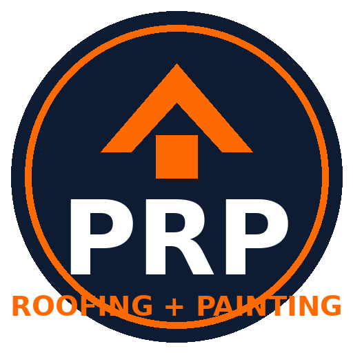
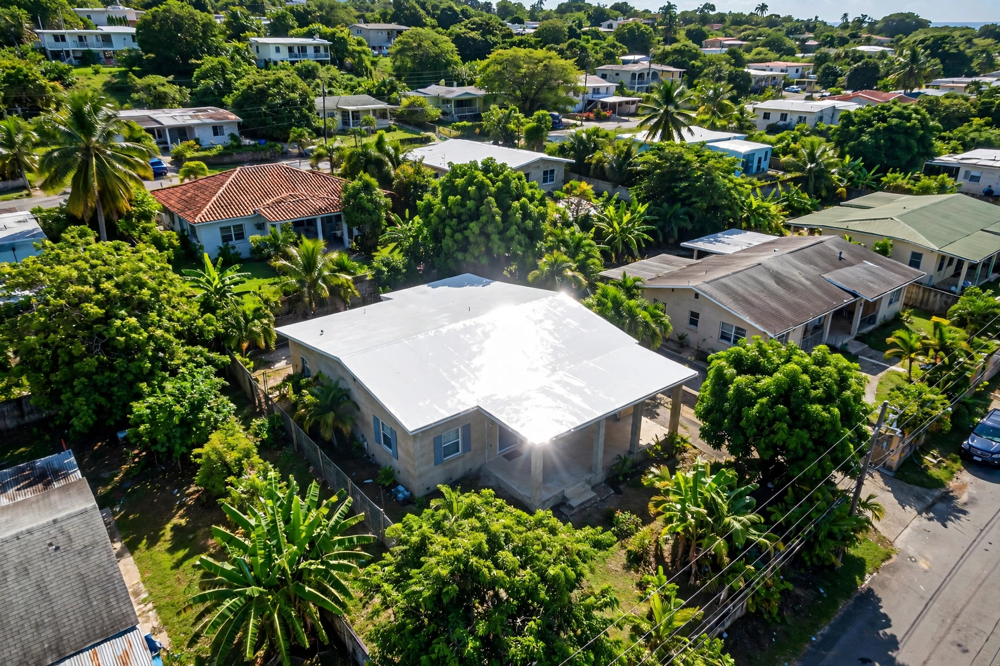

Profesional Roofing CotizarGurabo · Puerto Rico
Impermeabilizamos tu techo de concreto con sistemas profesionales y acabado en blanco que refleja el sol. Más pintura exterior para que tu casa quede nueva.

Galería
Sellado de techos y pintura: del detalle de los sellos al acabado final en blanco.
Lo que hacemos
Impermeabilización de techos de concreto con sistemas profesionales y acabado en blanco reflectivo.
Pedir cotización →Sellado de uniones, tubos, desagües y grietas: los puntos donde empiezan las filtraciones.
Pedir cotización →Pintura exterior residencial para completar el trabajo: techo sellado y casa como nueva.
Pedir cotización →Cómo trabajamos
Revisamos tu techo y te decimos qué necesita de verdad, sin venderte de más.
Limpieza y preparación de la superficie para que el sistema agarre bien.
Aplicación del sistema impermeable y pintura exterior si la pides.
Dudas comunes
Tu presencia en internet
Esta página es una muestra de lo que ManuPro hace por tu negocio. Elige tu plan:
Contacto
Escríbenos por WhatsApp o llámanos. Estamos en Gurabo, Puerto Rico.